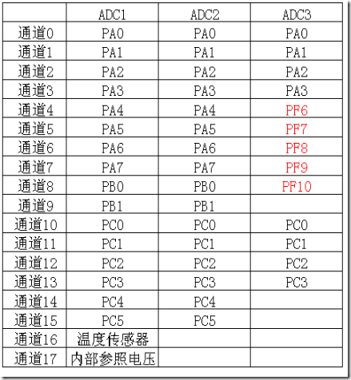
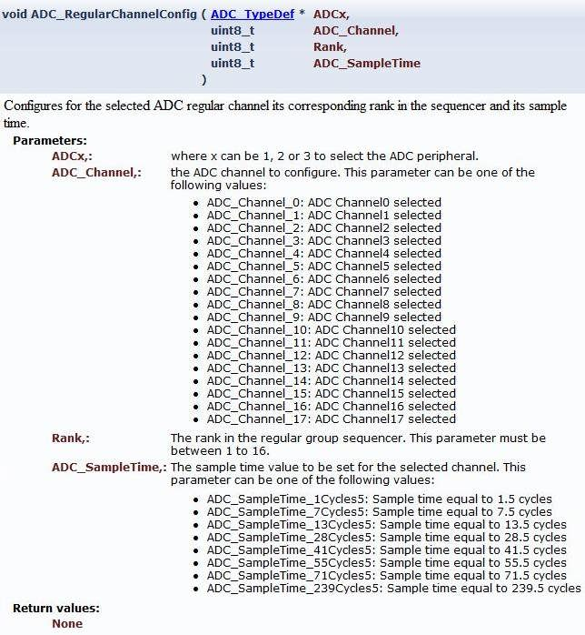

之前已经在《STM32F10x系列ADC的使用（一）——单通道ADC》一文中介绍了怎么使用单通道ADC。但是实际应用场合，往往需要同时使用多个引脚去测量不同的电压值。在传统的8位单片机编程中，往往是一个个引脚地读取ADC，也就是轮询。这样有一些不太好的地方，比如需要代码显式地读取，可能会破坏原来的逻辑。
STM32为代表的32位单片机强大之处之一就是有DMA，一旦配置好DMA，DMA就会独立于CPU，在后台搬运数据。另外，STM32的多通道ADC也只能工作在DMA方式下。原因下文分析（见“阶段三：为何不能使用轮询读取”）。
===================阶段一：何为扫描模式=================
STM32有3个ADC模块，每一个ADC模块都是可以并行工作的。而对于某个特定的ADC模块，比如ADC1，它又有16个通道。这16个通道直接则是分时复用的关系。
比如说，我开启了ADC1的通道0、通道1、通道2这么三个通道，并且规定分时复用的顺序是先通道0，再通道1最后通道2，那么，第1次读取ADC1的值时，读到的就是通道0的值，第2次读取时就是通道1的值，第3次读取时就是通道2的值，第4次读取时又是通道0的值，如此循环往复。
当然，我也可以规定分时复用的顺序是通道1、通道0,、通道2，那么第3*n+1次读取的值就是通道1，第3*n+2次读取的值就是通道0，第3*n+3次读取的值就是通道2。
就好像这些通道按照某个顺序排队，然后ADC依次扫描过来。对，这就是ADC的扫描模式~
===================阶段二：扫描模式的配置================
对于ADC而言，扫描模式的配置和非扫描模式的配置非常相似。假设我需要同时启用ADC1的通道0、通道1和通道2，并且扫描顺序是通道0、通道1和通道2，那么初始化代码如下：
void adc_init()
{
ADC_InitTypeDef t_adc;
//开启ADC1的时钟
RCC_APB2PeriphClockCmd(RCC_APB2Periph_ADC1,ENABLE);
//ADC使用独立模式
t_adc.ADC_Mode=ADC_Mode_Independent;
//启用扫描模式
t_adc.ADC_ScanConvMode=ENABLE;
//启用连续转换，即转换完一次后继续转换
t_adc.ADC_ContinuousConvMode=ENABLE;
//不使用外部触发
t_adc.ADC_ExternalTrigConv=ADC_ExternalTrigConv_None;
//数据右对齐
t_adc.ADC_DataAlign=ADC_DataAlign_Right;
//要转换的通道数为3
t_adc.ADC_NbrOfChannel=3;
//初始化ADC1
ADC_Init(ADC1,&t_adc);
//配置ADC的时钟为PCLK2的8分频
RCC_ADCCLKConfig(RCC_PCLK2_Div8);
//设置ADC1的通道0的转换周期为71.5个采样周期，次序为1
ADC_RegularChannelConfig(ADC1,ADC_Channel_0,1,ADC_SampleTime_71Cycles5);
//设置ADC1的通道1的转换周期为71.5个采样周期，次序为2
ADC_RegularChannelConfig(ADC1,ADC_Channel_1,2,ADC_SampleTime_71Cycles5);
//设置ADC1的通道2的转换周期为71.5个采样周期，次序为3
ADC_RegularChannelConfig(ADC1,ADC_Channel_2,3,ADC_SampleTime_71Cycles5);
//使能ADC1
ADC_Cmd(ADC1,ENABLE);
//使能软件触发
ADC_SoftwareStartConvCmd(ADC1,ENABLE);
}
void adc_gpio_init()
{
GPIO_InitTypeDef t_gpio;
//开启GPIOA的时钟
RCC_APB2PeriphClockCmd(RCC_APB2Periph_GPIOA,ENABLE);
//引脚0、1、2
t_gpio.GPIO_Pin=GPIO_Pin_0|GPIO_Pin_1|GPIO_Pin_2;
//模拟输入
t_gpio.GPIO_Mode=GPIO_Mode_AIN;
//在GPIOA上生效
GPIO_Init(GPIOA,&t_gpio);
}
代码中红色部分就是相对于单通道ADC的修改。
由于我们用了ADC1的通道0、1、2，而根据下表：

可知对应的引脚是PA0、PA1和PA2。因此需要在adc_gpio_init()中把这三个引脚设置为模拟输入。而在adc_init()中，最重要的函数莫过于ADC_RegularChannelConfig()这个函数。它的函数原型如下图：

第一个参数要么是ADC1，要么是ADC2，要么是ADC3；第2个参数就是通道编号，ADC_Channel_x就是指通道x；而Rank的取值直接决定了该通道在扫描中的顺序，取值是1,2,3…16；最后一个参数是该通道采样时间。 应该一目了然了吧~=================阶段三：为何不能使用轮询读取=================
前面说了，多通道ADC不能使用轮询。为什么呢？我们写一个示例说明。
如果能够使用轮询，那么代码应该这样：
u16 t_values[3];
while(1)
{
u8 t_i;
for(t_i=0;t_i<3;t_i++)
{
//等待ADC1转换完成
while(ADC_GetFlagStatus(ADC1,ADC_FLAG_EOC)==RESET);
//获取ADC1的值
t_values[t_i]=ADC_GetConversionValue(ADC1);
//清除转换完成标志
ADC_ClearFlag(ADC1,ADC_FLAG_EOC);
}
}
每3次读取作为一个完整的循环，于是t_values[0]存放的就是通道0的值，t_values[1]存放的就是通道1的值，而t_values[2]存放的就是通道2的值。
可是事实上，这段代码运行后的结果时，t_values[0]、t_values[1]和t_values[2]存放的都是通道2的值，这是为什么呢？
原因就是这行代码的问题：
ADC_GetFlagStatus(ADC1,ADC_FLAG_EOC)
我们想要的是每次转换完一个通道，ADC_FLAG_EOC就置位，让我们去读取。而事实上，只有当一趟扫描全部结束了，ADC_FLAG_EOC才置位。因此，每次读到的都是一趟扫描的最后一个通道的值。因为我们的顺序是通道0、通道1和通道2，所以每次读到的都是通道2。
=================阶段四：使用DMA读取===============
相对于单通道ADC，对DMA的配置也只是少数几处修改，代码如下：
u16 g_values[3];
void dma_config()
{
DMA_InitTypeDef t_dma;
//开启DMA1时钟
RCC_AHBPeriphClockCmd(RCC_AHBPeriph_DMA1,ENABLE);
//DMA设备基地址为((u32)0x40012400+0x4c)，也可以写作(u32)(&(ADC1->DR))
t_dma.DMA_PeripheralBaseAddr=(u32)(&(ADC1->DR));
//DMA内存基地址为&g_value
t_dma.DMA_MemoryBaseAddr=(u32)g_values;
//DMA传输方向为设备到内存
t_dma.DMA_DIR=DMA_DIR_PeripheralSRC;
//DMA缓冲区大小为3
t_dma.DMA_BufferSize=3;
//DMA设备地址不递增
t_dma.DMA_PeripheralInc=DMA_PeripheralInc_Disable;
//DMA内存地址递增
t_dma.DMA_MemoryInc=DMA_MemoryInc_Enable;
//DMA设备数据单位为半字、内存数据单位为半字，即每次传输16位
t_dma.DMA_PeripheralDataSize=DMA_PeripheralDataSize_HalfWord;
t_dma.DMA_MemoryDataSize=DMA_MemoryDataSize_HalfWord;
//DMA模式为循环，即传完一轮就进行下一轮
t_dma.DMA_Mode=DMA_Mode_Circular;
//DMA优先级为中
t_dma.DMA_Priority=DMA_Priority_Medium;
//DMA禁止内存到内存
t_dma.DMA_M2M=DMA_M2M_Disable;
DMA_Init(DMA1_Channel1,&t_dma);
//启用DMA1的通道1
DMA_Cmd(DMA1_Channel1,ENABLE);
//启动DMA搬运ADC数值
ADC_DMACmd(ADC1,ENABLE);
}
第一处改动是把DMA的内存地址改为g_buffer这个数组的首地址。
而第二处改动则是把DMA的缓冲区大小改为3。其实这边翻译成缓存区大小不太准确，其实就是每个循环搬运3次的意思。
第三处改动则是DMA内存地址递增。
如此设置以后，DMA就会每3次一循环，每次搬运16位（半字），每次搬运完就把地址增加（增加的量就是2字节，因为我们设置的是每次搬运16位）。3次搬运完以后，又从头开始（也就是内存地址又指向g_buffer）。
运行以后，g_buffer[0]中保存的就是通道0的最新值，g_buffer[1]中保存的就是通道1的最新值，g_buffer[2]中保存的就是通道2的最新值。
完整代码如下：
#include "stm32f10x_rcc.h"
#include "stm32f10x_gpio.h"
#include "stm32f10x_usart.h"
#include "stm32f10x_adc.h"
#include "stm32f10x_dma.h"
void usart1_confg()
{
USART_InitTypeDef t_uart;
GPIO_InitTypeDef t_gpio;
//开启GPIOA和USART1的时钟
RCC_APB2PeriphClockCmd(RCC_APB2Periph_GPIOA|RCC_APB2Periph_USART1,ENABLE);
//配置PA9（Tx）引脚为推挽输出，最大翻转频率10Mhz
t_gpio.GPIO_Pin=GPIO_Pin_9;
t_gpio.GPIO_Mode=GPIO_Mode_AF_PP;
t_gpio.GPIO_Speed=GPIO_Speed_10MHz;
GPIO_Init(GPIOA,&t_gpio);
//配置PA10（Rx）引脚为悬浮输入
t_gpio.GPIO_Pin=GPIO_Pin_10;
t_gpio.GPIO_Mode=GPIO_Mode_IN_FLOATING;
t_gpio.GPIO_Speed=GPIO_Speed_10MHz;
GPIO_Init(GPIOA,&t_gpio);
//配置串口波特率为115200，字长为8位，一位停止位，无校验位，无流控
t_uart.USART_BaudRate=115200;
t_uart.USART_WordLength=USART_WordLength_8b;
t_uart.USART_StopBits=USART_StopBits_1;
t_uart.USART_Parity=USART_Parity_No;
t_uart.USART_HardwareFlowControl=USART_HardwareFlowControl_None;
t_uart.USART_Mode=USART_Mode_Rx|USART_Mode_Tx;
USART_Init(USART1,&t_uart);
//开启串口
USART_Cmd(USART1,ENABLE);
}
void adc_init()
{
ADC_InitTypeDef t_adc;
//开启ADC1的时钟
RCC_APB2PeriphClockCmd(RCC_APB2Periph_ADC1,ENABLE);
//ADC使用独立模式
t_adc.ADC_Mode=ADC_Mode_Independent;
//启用扫描模式
t_adc.ADC_ScanConvMode=ENABLE;
//启用连续转换，即转换完一次后继续转换
t_adc.ADC_ContinuousConvMode=ENABLE;
//不使用外部触发
t_adc.ADC_ExternalTrigConv=ADC_ExternalTrigConv_None;
//数据右对齐
t_adc.ADC_DataAlign=ADC_DataAlign_Right;
//要转换的通道数为3
t_adc.ADC_NbrOfChannel=3;
//初始化ADC1
ADC_Init(ADC1,&t_adc);
//配置ADC的时钟为PCLK2的8分频
RCC_ADCCLKConfig(RCC_PCLK2_Div8);
//设置ADC1的通道0的转换周期为71.5个采样周期，次序为1
ADC_RegularChannelConfig(ADC1,ADC_Channel_0,1,ADC_SampleTime_71Cycles5);
//设置ADC1的通道1的转换周期为71.5个采样周期，次序为2
ADC_RegularChannelConfig(ADC1,ADC_Channel_1,2,ADC_SampleTime_71Cycles5);
//设置ADC1的通道2的转换周期为71.5个采样周期，次序为3
ADC_RegularChannelConfig(ADC1,ADC_Channel_2,3,ADC_SampleTime_71Cycles5);
//使能ADC1
ADC_Cmd(ADC1,ENABLE);
//使能软件触发
ADC_SoftwareStartConvCmd(ADC1,ENABLE);
}
void adc_gpio_init()
{
GPIO_InitTypeDef t_gpio;
//开启GPIOA的时钟
RCC_APB2PeriphClockCmd(RCC_APB2Periph_GPIOA,ENABLE);
//引脚0、1、2
t_gpio.GPIO_Pin=GPIO_Pin_0|GPIO_Pin_1|GPIO_Pin_2;
//模拟输入
t_gpio.GPIO_Mode=GPIO_Mode_AIN;
//在GPIOA上生效
GPIO_Init(GPIOA,&t_gpio);
}
u16 g_values[3];
void dma_config()
{
DMA_InitTypeDef t_dma;
//开启DMA1时钟
RCC_AHBPeriphClockCmd(RCC_AHBPeriph_DMA1,ENABLE);
//DMA设备基地址为((u32)0x40012400+0x4c)，也可以写作(u32)(&(ADC1->DR))
t_dma.DMA_PeripheralBaseAddr=(u32)(&(ADC1->DR));
//DMA内存基地址为&g_value
t_dma.DMA_MemoryBaseAddr=(u32)g_values;
//DMA传输方向为设备到内存
t_dma.DMA_DIR=DMA_DIR_PeripheralSRC;
//DMA缓冲区大小为3
t_dma.DMA_BufferSize=3;
//DMA设备地址不递增，内存地址递增
t_dma.DMA_PeripheralInc=DMA_PeripheralInc_Disable;
t_dma.DMA_MemoryInc=DMA_MemoryInc_Enable;
//DMA设备数据单位为半字、内存数据单位为半字，即每次传输16位
t_dma.DMA_PeripheralDataSize=DMA_PeripheralDataSize_HalfWord;
t_dma.DMA_MemoryDataSize=DMA_MemoryDataSize_HalfWord;
//DMA模式为循环，即传完一轮就进行下一轮
t_dma.DMA_Mode=DMA_Mode_Circular;
//DMA优先级为中
t_dma.DMA_Priority=DMA_Priority_Medium;
//DMA禁止内存到内存
t_dma.DMA_M2M=DMA_M2M_Disable;
DMA_Init(DMA1_Channel1,&t_dma);
//启用DMA1的通道1
DMA_Cmd(DMA1_Channel1,ENABLE);
//启动DMA搬运ADC数值
ADC_DMACmd(ADC1,ENABLE);
}
void delay(u32 p_loop)
{
while(p_loop--);
}
int main()
{
usart1_confg();
adc_init();
adc_gpio_init();
dma_config();
while(1)
{
u8 t_i;
for(t_i=0;t_i<3;t_i++)
{
//由于采样值是12位，而每次只能发送8位，为了看个大概，右移4位。
USART_SendData(USART1,g_values[0]>>4);
delay(0xffff);
//由于采样值是12位，而每次只能发送8位，为了看个大概，右移4位。
USART_SendData(USART1,g_values[1]>>4);
delay(0xffff);
//由于采样值是12位，而每次只能发送8位，为了看个大概，右移4位。
USART_SendData(USART1,g_values[2]>>4);
delay(0xffffff);
}
}
}
运行之后，每次输出三个字节，分别是PA0、PA1和PA2上的电压的8位ADC值。